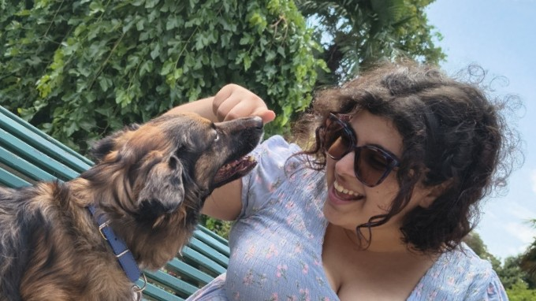

Hey, I'm Lucy.
I run highly immersive, detail-oriented D&D 5e campaigns where your character's backstory actually matters.
I didn't start doing this to run a business; I started because I love the chaotic, collaborative magic that happens when a group of people commits to telling a great story together. My tables are built on deep storytelling, curated soundtracks, and atmospheric environments. If you have an insane, borderline-impossible plan and you're hoping the dice roll in your favor? I am your biggest fan.
My priority is the community. When you join one of my campaigns, you aren't just paying for a weekly three-hour game; you are joining a curated, highly protective ecosystem of people who actually like each other. My players frequently hang out, share memes, and play games together long after the session ends.
To protect that environment, I operate a strict, zero-toxicity space. My tables are fundamentally LGBTQ+ safe, neurodivergent-friendly, and highly supportive of beginners. If you are looking to play a lone wolf who steals from the party and causes out-of-character drama, we aren't a good fit. But if you want to collaborate, support your fellow players, and build something unforgettable, pull up a chair.

When the virtual tabletop shuts down, you can usually find me wandering around Turin with my druid in forever wildshape (aka my dog) Benji.
I also spend an unreasonable amount of time getting way too invested in custom mechanical keyboards, mixing substrates for my plant collection, or going to HEMA fencing practice.
Professional campaigns require professional stability. My digital tables are hosted on The Forge, a dedicated premium server environment specifically optimized for Foundry VTT. This ensures high uptime and isolates our game instances from standard local network outages.
Sessions run exclusively on Foundry VTT. I heavily modify the platform with extensive community modules to automate tactical combat calculations, manage line-of-sight dynamic lighting, and trigger environmental audio cues seamlessly.
Beyond weekly campaigns, I offer fantastic tabletop experiences tailored to your exact needs.